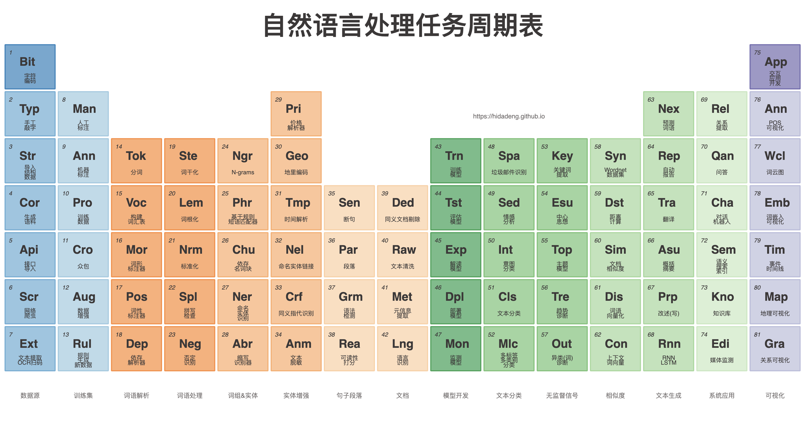
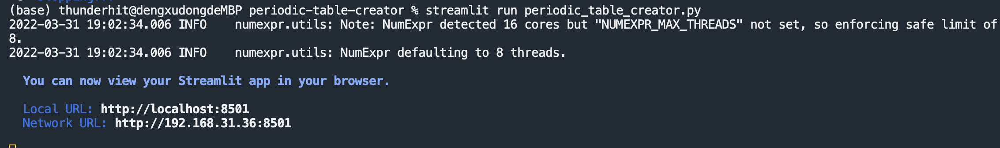
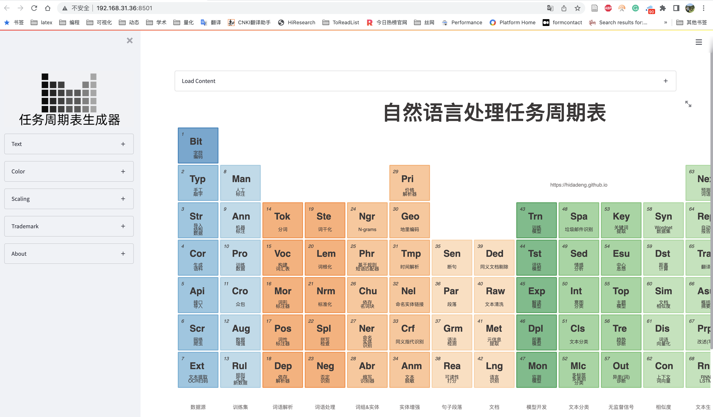
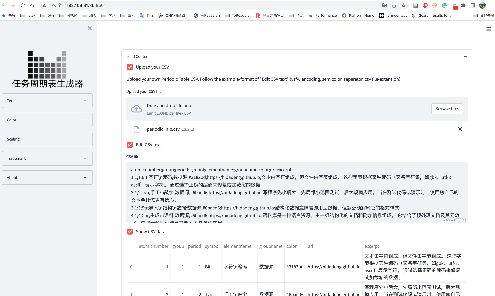

这个周期表生成器的想法是创建一个关于 自然语言处理任务周期表 的博客。 在 Streamlit 的帮助下并受到此 Bokeh 图库示例 的启发，它成为了一个动态的创建者，可以根据您的元素周期表进行定制 ！
大邓的作用仅仅是将其汉化，没有做布局上的新创新。
下载
点击下载periodic-table-creator项目压缩文件夹
下面是自定义的任务周期表示例。 在这种情况下：对于自然语言处理任务！

安装&运行
打开命令行(终端),
pip3 install streamlit==1.8.1
pip3 install bokeh==2.4.1
#切换至项目文件夹periodic-table-creator
cd periodic-table-creator
#运行streamlit
streamlit run periodic_table_creator.py
此时在命令行中会出现

点击Local URL对应的链接，或者将该链接复制粘贴到浏览器，即可访问。

导入数据
创建自己特有的任务周期表需要导入自由的csv数据。可以[点击这里] (periodic-table-creator/periodic_nlp.csv) 下载并查看数据格式，或者运行案例时， 点击按钮"Edit CSV text" 查看示例数据格式。
- 表的字符名(列名):
atomicnumber;group;period;symbol;elementname;groupname;color;url;excerpt - csv文件的分隔符使用英文格式下的
;或, - csv文件使用utf-8编码
